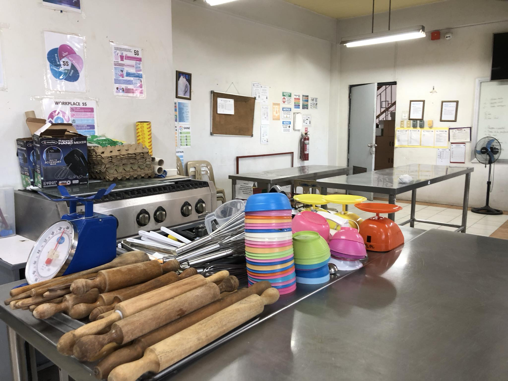
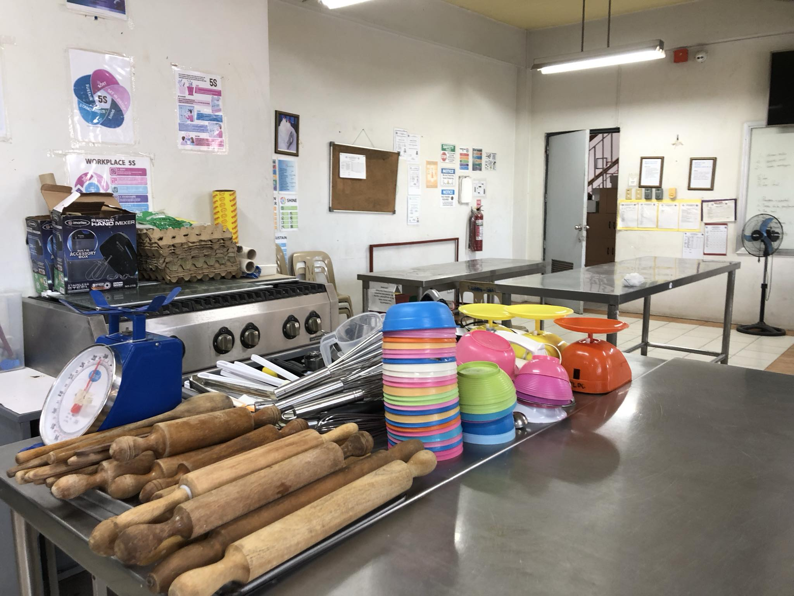

Bread & Pastry Production NC II
Description
This course equips students with the fundamental techniques in bread and pastry making, including dough preparation, shaping, baking, and finishing. Students learn to produce a wide range of breads, pastries, and desserts, such as bread rolls, cakes, cookies, pies, and specialty breads. Topics covered may include ingredient selection, mixing methods, fermentation, baking principles, decorating techniques, and sanitation practices.
Duration
250 hours

 

×